KK ist eine hässliche Stadt. Sie wirkt als hätte man alles, was man für eine Stadt braucht – einen großen Flughafen, Hotels, Shopping Malls, sowie Banken und Häuser zu gleichen Teilen – in einem billigen Katalog bestellt und an eine nette Stelle am Meer liefern lassen. Das Ensemble ist dann mit riesigen Straßen zusammen geklebt und sich selbst überlassen worden. Nach Einbruch der Dunkelheit gewinnt der Stadtkern aber an Charme. Abends öffnen überall die malayischen und chinesischen Restaurants, die mit ihren Plastikstühlen die Trottoirs überfluten. Die "Waterfront" verwandelt sich in einen riesigen Seafood-Grill. Shrimps, Krabben, Squid und Fische stapeln sich auf den Auslagen, die durch die Rauchschwaden gerade noch erkennbar bleiben, und werden nach Bestellung gegrillt. Auf den Klapptischen stehen Wasser und spezielle Handwaschschüsseln bereit, damit man sich nach einer klebrigen Mahlzeit wieder herrichten kann, Generatoren machen Strom, Säcke voller Eiswürfel, Trinkwassertanks… – ein typisch asiatisches, permanentes Provisorium.
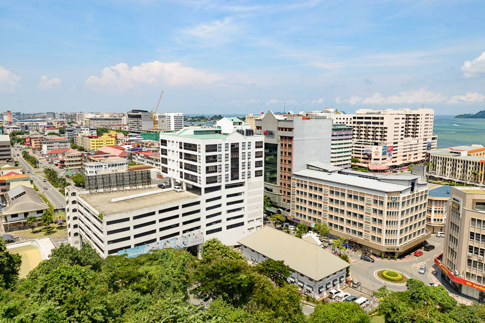
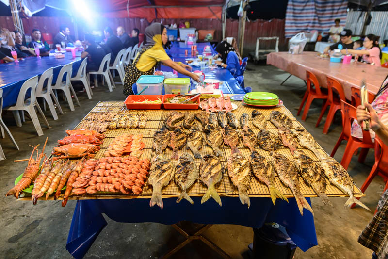
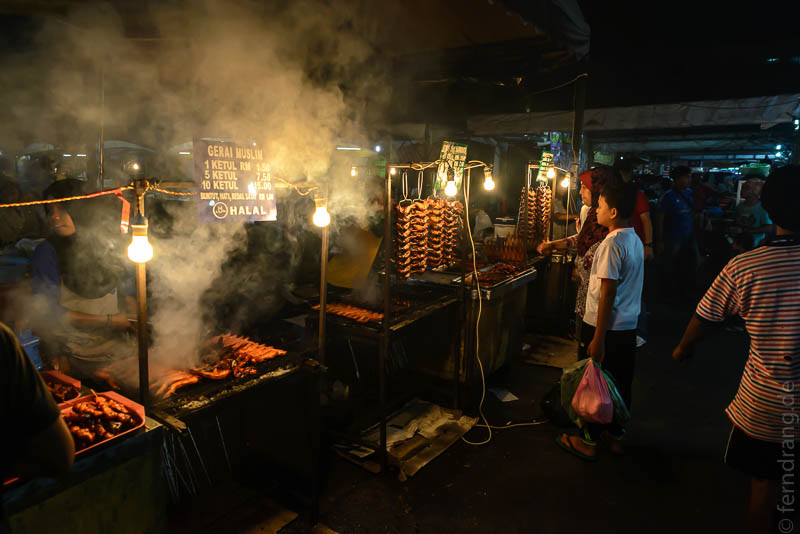
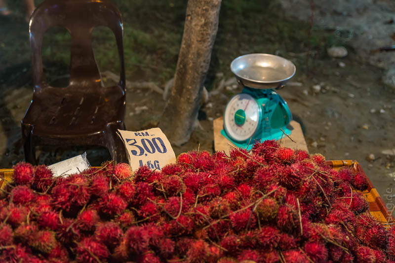
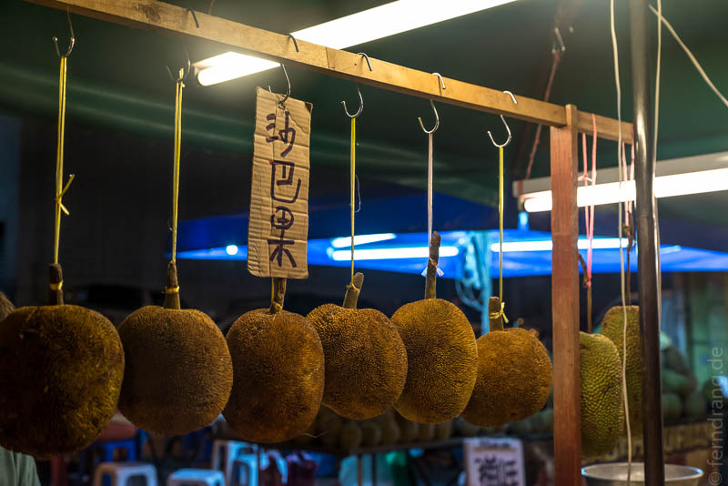
Unser eigentlicher Grund für den Stopp in KK war der Mount Kinabalu. Leider wurde unsere Bergtour abgesagt, weil ein Erdbeben im Juli da oben einiges durcheinander gebracht hat. Stattdessen haben wir eine Mountainbike-Tour unternommen, was sich anfangs als schwerer Fehler darstellte. Für den ersten Tag war vorgesehen mit maximalem Aufwand den minimalen Nutzen zu schaffen und vier Stunden lang im nullten Gang eine Schotterpiste steil bergauf zu hecheln. Das hat in etwa so viel Spaß gemacht, wie mit der Nagelschere einen Golfplatz zu mähen. Wir haben das kurzerhand in eine Wanderung umgewandelt, so dass wir wenigstens etwas von der Landschaft um uns herum mitbekommen haben. Die war allerdings nach unseren Spaziergängen in Mulu nicht sonderlich aufregend.
Beim Etappenziel angekommen wurde es aber wieder interessanter. Wir sind in einem 20-Häuser-Dorf privat untergebracht und bekocht worden. Die Leute wohnen dort in unglaublich einfachen Verhältnissen. Bei strömendem Regen haben wir den Punkt "Swimming and BBQ" abgehakt, was durch den unermüdlichen Einsatz der Guides doch recht lustig war. Abends wurden wir in einem anderen Haus im Dorf mit einem Querschnitt durch die Küche Sabahs überrascht: Wilder Ingwer, Bananenherzen, geräuchertes Wildschwein, alles mit vielen Anchovis, die hier als Gewürz eingesetzt werden. Dazu gab es leckeren selbstgemachten Reiswein.
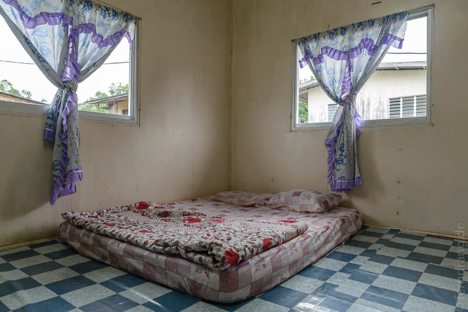
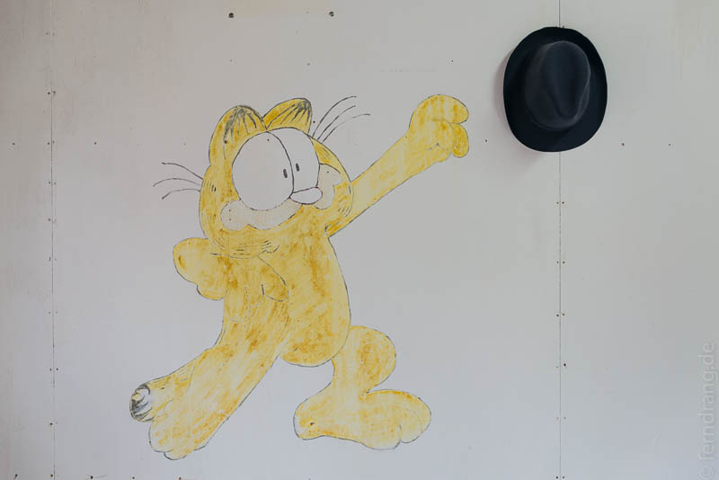
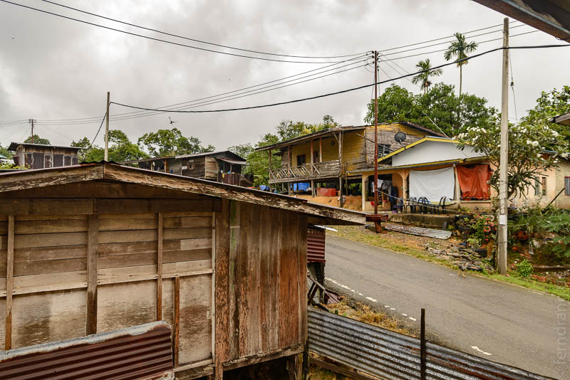
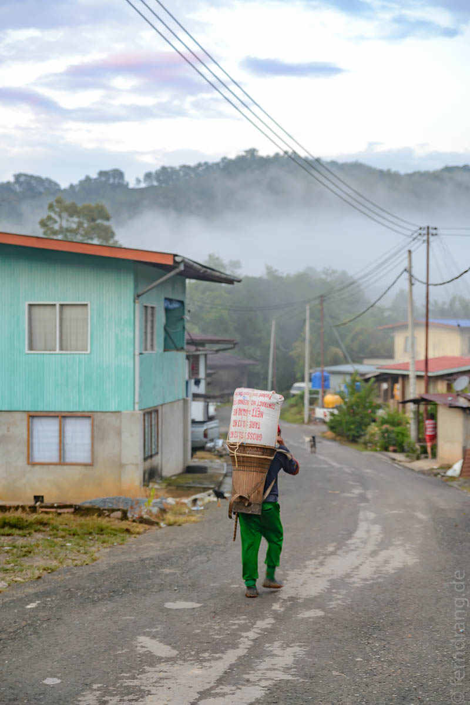
Am zweiten Tag war auch der Radfahrteil der Radtour erträglich. Es ging hoch und runter über Schotterpisten und wackelige Hängebrücken. Zwischendurch könnten wir bei klarem Himmel einen sehnsüchtigen Blick auf die schroffe Silhouette des Mt. Kinabalu werfen, der die Hügel der Gegend um fast 3000m überragt. Später hat unser Guide noch eine Extra-Runde mit uns über Trampelpfade durch Felder und Wälder gemacht und uns vieles über die wilden und kultivierten Pflanzen der Gegend erklärt. Wir mussten die Räder immer wieder über Bambusbrückchen tragen oder über wilde Hängebrücken mit löchrigem Boden schieben.
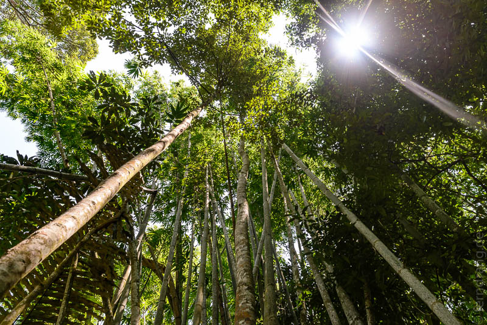
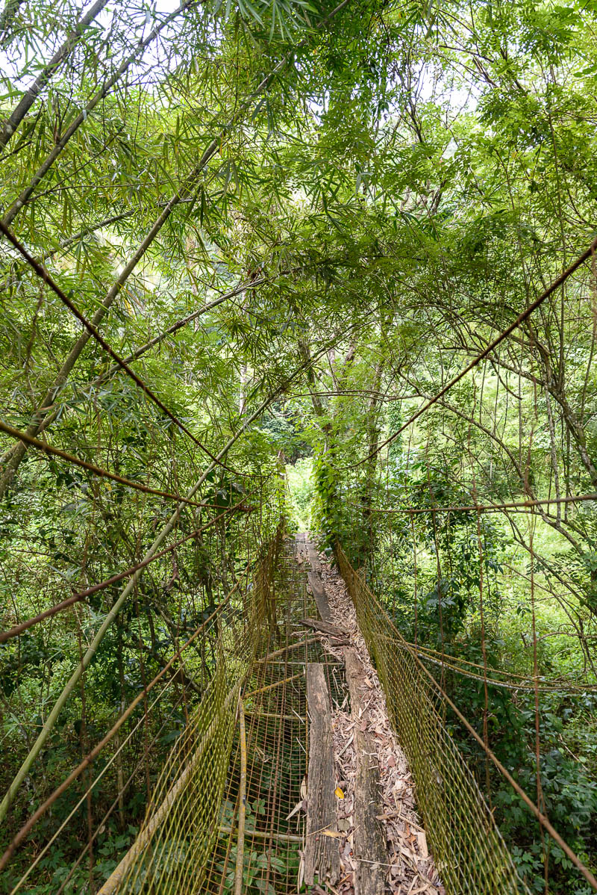
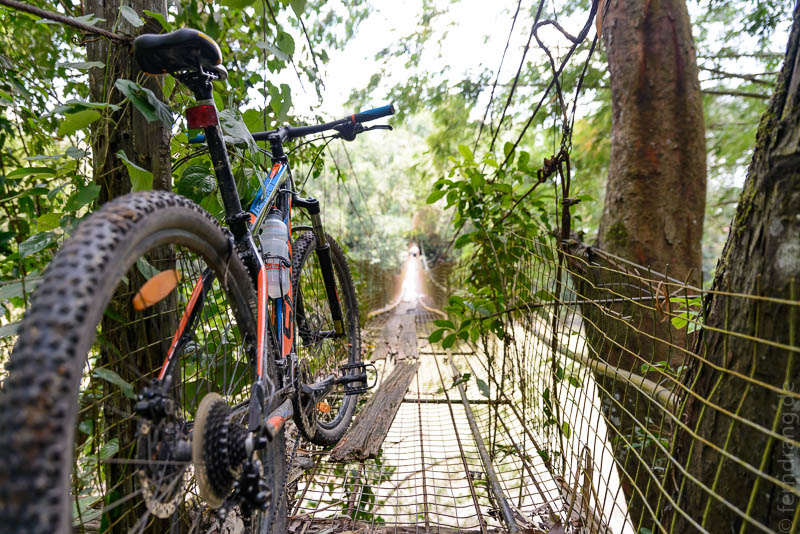
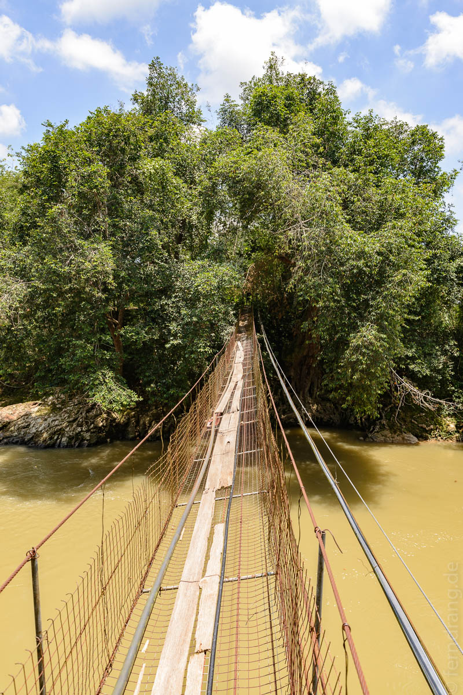
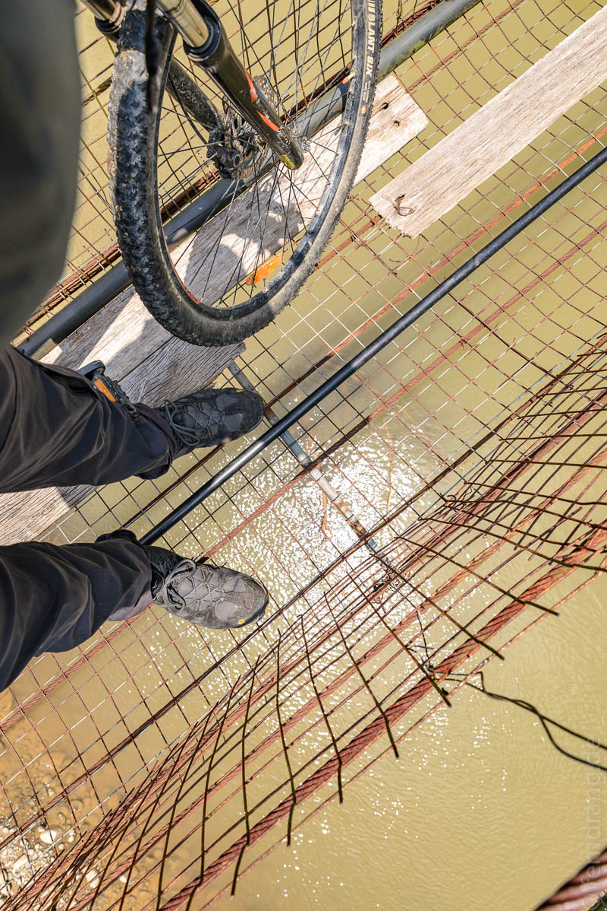
Zurück in KK haben wir uns an die schwierige Aufgabe gemacht anderthalb Tage dort totzuschlagen. Unser Hostel, die Bunibon Lodge, lädt nicht zum Verweilen ein. Aber in der wuseligen Jalan Gaya haben wir ein kleines Lokal entdeckt, wo man für ein paar Cents leckere Rotis essen und Tee trinken kann. Das haben wir ausgiebig ausgekostet. Alle paar Stunden haben wir uns ein anderes Kaffee gesucht.
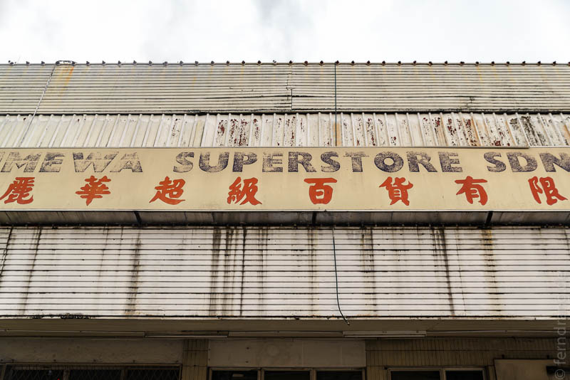
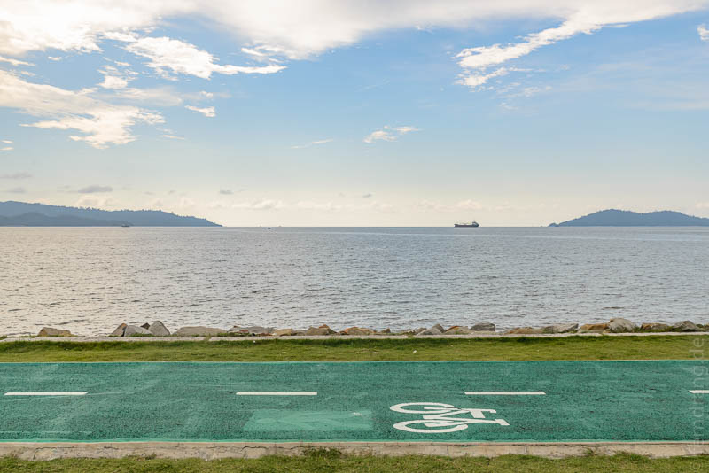
Später haben wir einen Ausflug zur großen KK City Mosque gemacht. Von weitem schon sieht man in der langen Bucht hinter dem Stadtstrand die vier hohen Minarette und die mächtige Kuppel aufragen, die sich in der ringsum angelegten Wasserfläche spiegelt. Je näher man kommt, desto schäbiger wird die Anlage. Stadtplanerisch fasziniert, dass die größte Moschee der Stadt zwar eine Bushaltestelle an der Stadtautobahn hat, es aber keinen Fußweg von dort zum Eingang gibt. Man geht über den Grasstreifen oder die Straße. Aber in KK fährt ohnehin jeder einen Pickup, wir sind die einzigen, die zu Fuß gehen.
Innen drin entpuppt sich die Dachkonstruktion als ein offenes Stahlgerüst, wie in Lagerhallen. Um überhaupt reinzukommen, hat unsere lange Kleidung samt Hut und Tuch – ein echtes Zugeständnis bei dieser Hitze – nicht ausgereicht. Wir mussten uns bei einem bereitstehenden Karnevalsausstatter einen Satz Kutten inkl. Kopfbedeckung ausleihen. Ich selbst hätte es für anmaßend gehalten, so in eine Moschee zu gehen, aber unser authentischer Look hat für allgemeine Begeisterung gesorgt und die "Hellos" sind zu "Salam Aleikums" geworden. Die Besichtigung des Innenraums hätten wir uns wie gesagt sparen können. Allerdings sind wir so in den Genuss einer kurzen aber eindrucksvollen Demonstration religiöser Logik gekommen, als uns ein beflissener Schüler in ein paar Geheimnisse eingeweiht hat: "We separate men and women because the intention is that they don't mix up." Glasklar. Er hat die Angelegenheit in dieser Art noch weiter "erklärt". Um keine Langzeitschwäche in Dialektik davon zu tragen, haben wir keine weiteren Fragen gestellt.
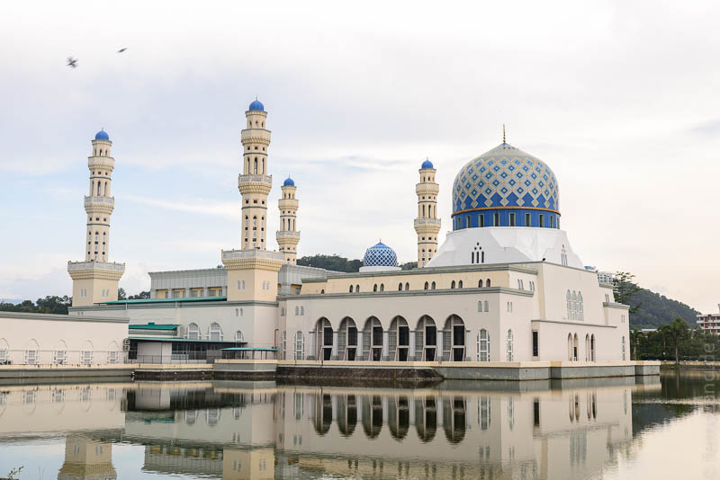
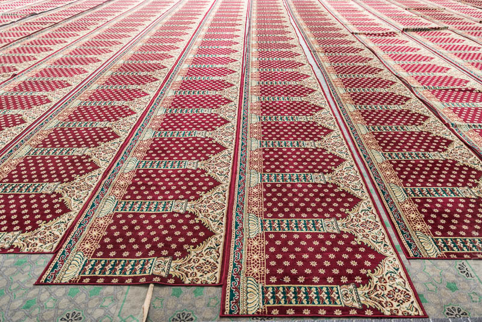